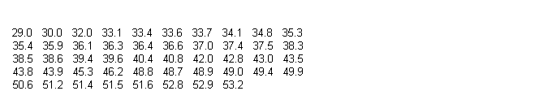
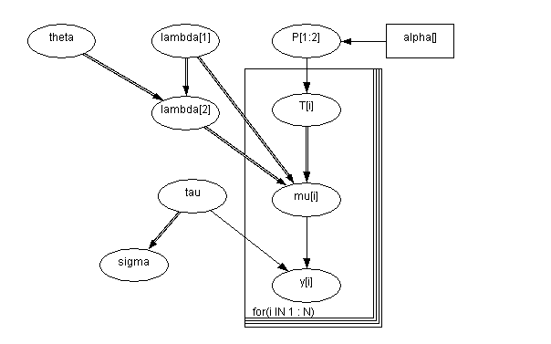
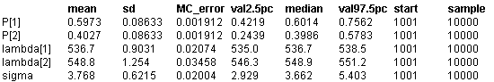

![[eyes0]](eyes0.bmp) Eyes: Normal Mixture Model
Eyes: Normal Mixture Model
Bowmaker et al (1985) analyse data on the peak sensitivity wavelengths for individual microspectrophotometric records on a small set of monkey's eyes. Data for one monkey (S14 in the paper) are given below (500 has been subtracted from each of the 48 measurements).

Part of the analysis involves fitting a mixture of two normal distributions with common variance to this distribution, so that each observation y
i
is assumed drawn from one of two groups. T
i
= 1, 2 be the true group of the
i
th observation, where group j has a normal distribution with mean
l
j
and precision
t
. We assume an unknown fraction P of observations are in group 2, 1 - P in group 1. The model is thus
y
i
~ Normal(
l
T
i
,
t
)
T
i
~ Categorical(P).
We note that this formulation easily generalises to additional components to the mixture, although for identifiability an order constraint must be put onto the group means.
Robert (1994) points out that when using this model, there is a danger that at some iteration,
all
the data will go into one component of themixture, and this state will be difficult to escape from --- this matches our experience. obert suggests a re-parameterisation, a simplified version of which is to assume
l
2
=
l
1
+
q
,
q
> 0.
l
1
,
q
,
t
, P, are given independent ``noninformative" priors, including a uniform prior for P on (0,1). The appropriate graph and the BUGS code are given below.

model
{
for( i in 1 : N ) {
y[i] ~ dnorm(mu[i], tau)
mu[i] <- lambda[T[i]]
T[i] ~ dcat(P[])
}
P[1:2] ~ ddirich(alpha[])
theta ~ dunif(0.0, 1000)
lambda[2] <- lambda[1] + theta
lambda[1] ~ dnorm(0.0, 1.0E-6)
tau ~ dgamma(0.001, 0.001) sigma <- 1 / sqrt(tau)
}
Data
( click to open )
Inits for chain 1
Inits for chain 2
( click to open )
Results
A 1000 update burn in followed by a further 10000 updates gave the parameter estimates
